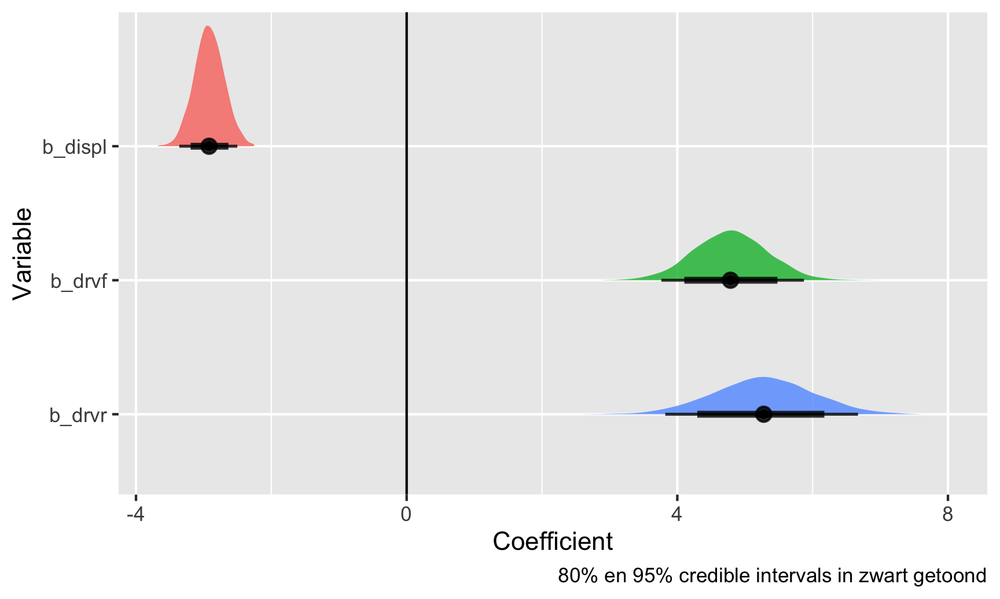
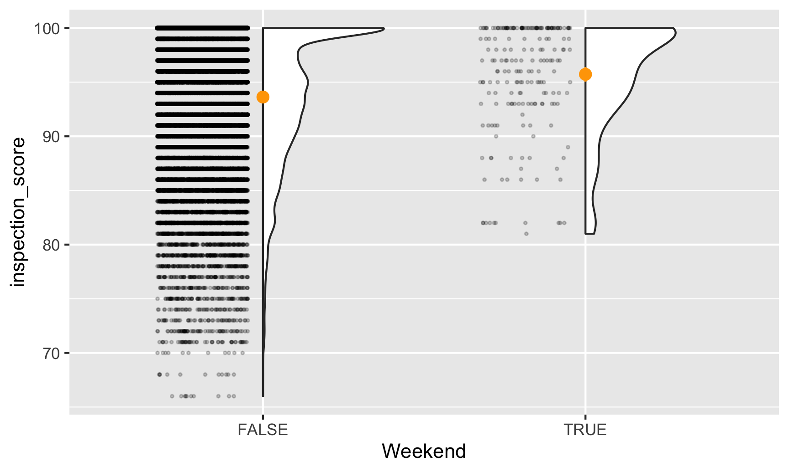
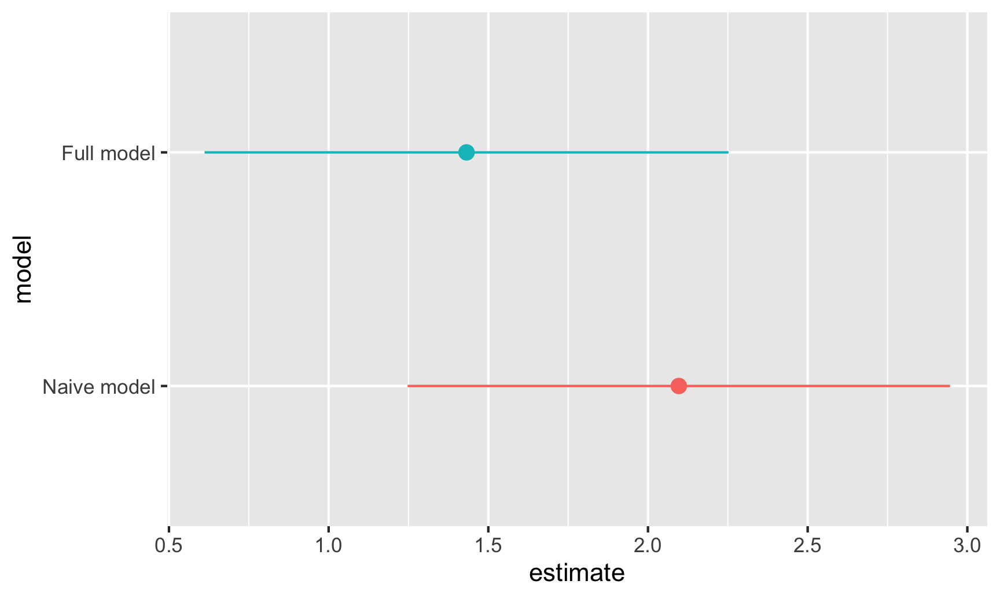
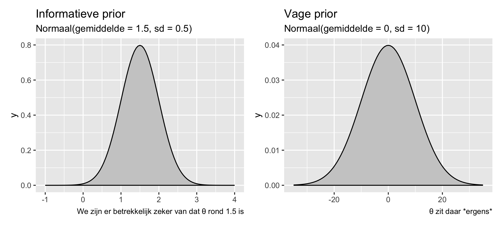
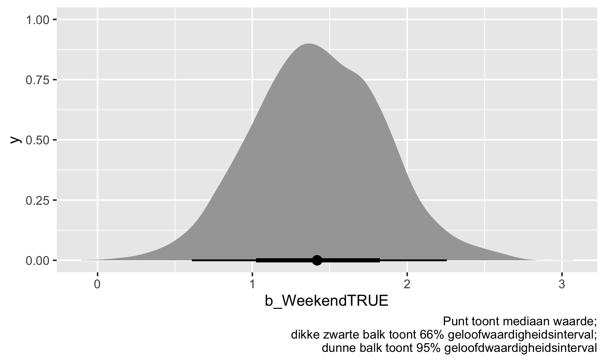
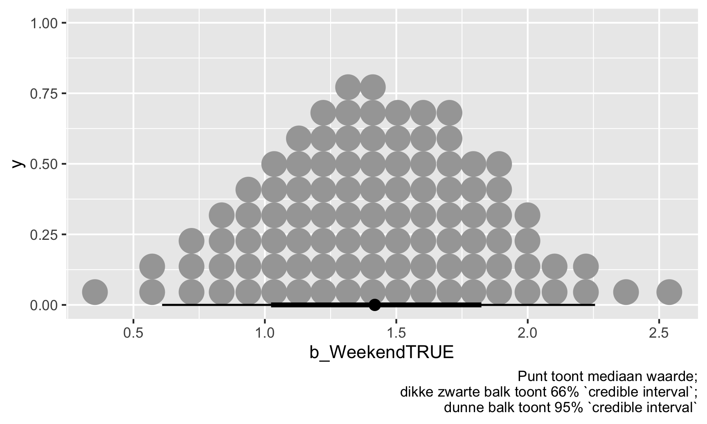
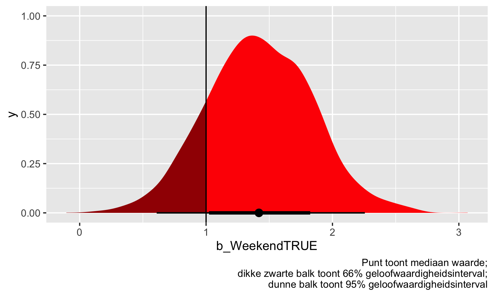
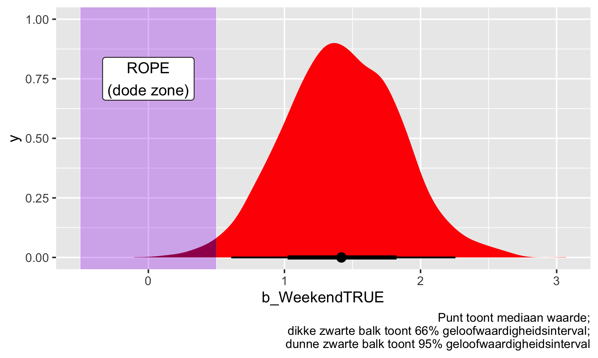
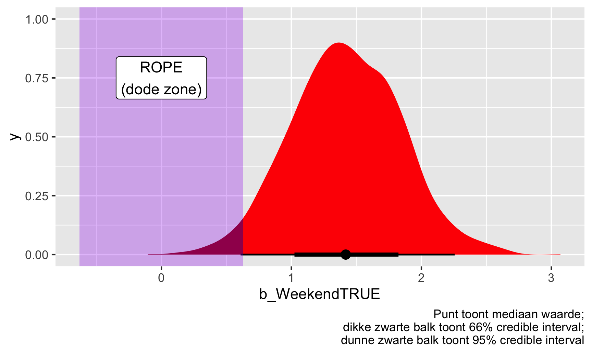

library(tidyverse)
library(broom)
model_ols <- lm(hwy ~ displ + drv, data = mpg)
tidy(model_ols, conf.int = TRUE)
## # A tibble: 4 × 7
## term estimate std.error statistic p.value conf.low conf.high
## <chr> <dbl> <dbl> <dbl> <dbl> <dbl> <dbl>
## 1 (Intercept) 30.8 0.924 33.4 4.21e-90 29.0 32.6
## 2 displ -2.91 0.218 -13.4 1.73e-30 -3.34 -2.48
## 3 drvf 4.79 0.530 9.05 6.40e-17 3.75 5.83
## 4 drvr 5.26 0.734 7.17 1.03e-11 3.81 6.70Introductie
Regelmatig kijk ik naar de website van Andrew Heiss. Van hem heb ik ondertussen al veel geleerd. Van zijn cursussen over visualisatie en programma-evaluatie bijvoorbeeld en ik vind hem heel goed in wetenschappelijk communiceren. Andrew Heiss is ook geïnteresseerd in Bayesiaanse statistiek. Op zijn site vond ik een hele duidelijke introductie op hierop onder de titel Bayesian statistics resources. Dat heeft hij zichzelf aangeleerd en hij stimuleert ook anderen dit zelf eigen te maken. Zijn introductieblog heb ik hier wat bewerkt.
Dank je wel, Andrew, voor je enthousiasme en je heldere uitleg die je steeds voor iedereen toegankelijk maakt.
Over het Bayesiaans perspectief
In zijn lessen (zie dit in de FAQ slides) had Heiss het eerder over het verschil tussen frequentistische statistiek, waarbij je test op de waarschijnlijkheid van je gegevens gegeven een nulhypothese, of \(P(\text{data} \mid H_0)\), en Bayesiaanse statistiek, waarbij je test op de waarschijnlijkheid van je hypothese gegeven je gegevens, of \(P(H \mid \text{data})\).
Dit verschil is belangrijk. In de wereld van frequentisme en ‘Nul Hypothese Significantie Testen (NHST)’, wat in bijna alle statistieklessen wordt gebruikt, moet je je bevindingen vergelijken met een hypothetische nulwereld en moet je praten over het verwerpen van de nul-hypothese. In de Bayes-wereld heb je het echter over de waarschijnlijkheid dat jouw hypothese juist is in plaats van de waarschijnlijkheid dat je een waarde ziet in een nulwereld. Eigenlijk veel handiger en gemakkelijker te interpreteren!
Bayesiaanse statistiek vereist echter veel rekenkracht en een andere manier van denken over statistiek en getallen in het algemeen. En er zijn maar heel weinig lessen waarin dit wordt onderwezen.
Bronnen
Maar je kunt het ook zelf leren. Omdat maar heel weinig statsistiek-klassen Bayesiaanse statistiek onderwijzen, zijn veel mensen die het gebruiken autodidact (zoals Andrew Heiss zelf, en ik ook een beetje). En online zijn er heel veel bronnen om dit te leren. Hier zijn een paar van de beste die Andrew heeft gevonden en die ik wat heb aangevuld:
- Dit betrekkelijk nieuwe Bayes Rules boek is ontworpen als inleidend tekstboek voor een statistiek-klas waarin Bayesiaanse dingen worden onderwezen. Het is heel toegankelijk en goed (en gratis bovendien!). Als Andrew ooit een introductieles zou mogen geven over Bayesiaanse statistieken, dan zal hij dit gebruiken.
- Deze blogpost is van 2016 is een geweldige korte inleiding en heeft ervoor gezorgd dat Heiss Bayesiaanse methoden is gaan gebruiken. Het brms pakket maakt het ongelooflijk eenvoudig om Bayesiaanse dingen te doen, en de syntaxis is in principe hetzelfde als
lm(). - Deze blogpost maakt duidelijk hoe je een simpele taak uitvoert (een verschil-in-gemiddelden-test) met gewone oude frequentistische methoden, bootstrapping en met Bayesiaanse statistieken, zowel met brms als met onbewerkte Stan-code
- Deze korte blogpost geeft een nuttig overzicht van de intuïtie achter het Bayesiaans denken.
- Het super canonieke-iedereen-heeft-dit-boek isStatistical Rethinking by Richard McElreath. Op die pagina heeft hij ook een hele reeks begeleidende lezingen op YouTube staan. Hij gebruikt geen brms of ggplot, maar iemand heeft al zijn modellen vertaald naar tidyverse-based brms code here. Heiss zelf heeft hier later ook wat handige codes bij gemaakt hier
- The Theory That Would Not Die is een hele goede algemene inleiding in de geschiedenis van Bayesiaans denken en waarom het in de 20e eeuw verdween en werd vervangen door frequentisme en p-waarden en nulhypothesetests. Hier vertelt ze over dat boek.
Super kort voorbeeld
In de praktijk zou de R-code voor Bayesiaanse modellen bekend moeten zijn. Hier is bijvoorbeeld een oud frequentistisch OLS-model:
Hier is datzelfde model, maar nu Bayesiaans uitgevoerd met het brms pakket, met de default-priors. Merk op dat de Bayesiaanse code in principe hetzelfde is als de frequentistische code, maar dat de output anders is.
library(tidyverse)
library(brms) # Voor Bayesiaanse regressie met brm()
library(broom.mixed) # Voor tidy() en glance() met op brms-gebaseerde modellen
library(tidybayes) # Om er posterior trekkingen uit te halen# TDit duurt wel even
model_bayes <- brm(hwy ~ displ + drv, data = mpg)tidy(model_bayes)
## # A tibble: 5 × 8
## effect component group term estimate std.error conf.low conf.high
## <chr> <chr> <chr> <chr> <dbl> <dbl> <dbl> <dbl>
## 1 fixed cond <NA> (Intercept) 30.8 0.927 29.0 32.7
## 2 fixed disp <NA> displ -2.92 0.219 -3.34 -2.48
## 3 fixed cond <NA> drvf 4.79 0.540 3.72 5.84
## 4 fixed cond <NA> drvr 5.27 0.727 3.84 6.71
## 5 ran_pars cond Residual sd__Observation 3.10 0.144 2.84 3.39In Bayes-land krijg je een verdeling van plausibele waarden gegeven de gegevens (of wat ook wel de “posterior distributie” wordt genoemd). Je kunt deze posterior distributie visualiseren:
# Maak een lange dataset (sample) van de trekkingen voor deze drie coëfficiënten
posterior_draws <- model_bayes %>%
gather_draws(c(b_displ, b_drv, b_drvf, b_drvr))
# Plot dit
ggplot(posterior_draws, aes(x = .value, y = fct_rev(.variable), fill = .variable)) +
geom_vline(xintercept = 0) +
stat_halfeye(.width = c(0.8, 0.95), alpha = 0.8, point_interval = "median_hdi") +
guides(fill = "none") +
labs(x = "Coefficient", y = "Variable",
caption = "80% en 95% credible intervals in zwart getoond")
Dit zijn alle plausibele waarden voor deze coëfficiënten, gegeven de gegevens die we aan het model hebben gegeven. De zwarte balken onderaan tonen de 80% en 95% credible intervals (of het bereik van waarden dat 80/95% van de posterior dekt). Hiermee is er bij de één 95% kans dat de coëfficiënt voor de eerste variabele (displ)-verplaatsing tussen -3,35 en -2,48 ligt.
Confidence intervallen (betrouwbaarheidsintervallen) vs. credible intervallen (geloofwaardigheidsintervallen)
Het verschil tussen frequentistische confidence intervallen en Bayesiaanse credible (of posterior) intervallen is elders vaker duidelijk gemaakt, bijvoorbeeld hier Guido Imbens’s essay over p-waarden. Zijn conclusie daarin is
Het zou beter zijn als rapportagestandaarden de nadruk zouden leggen op betrouwbaarheidsintervallen of standaardfouten, en, nog beter, op Bayesiaanse posterior intervallen.
Imbens wil dat we Bayesiaanse posterior intervallen (of credible intervallen) gebruiken, maar hoe doen we dat?
Frequentistische confidence intervallen
In frequentistische statistiek (waar in het onderwijs veelal de nadruk op ligt), is het hele doel om iets te schatten en af te leiden over een populatie met behulp van een steekproef. Dit “iets” is een waar (maar onbekend) iets dat een populatieparameter wordt genoemd. Het is een enkele, vaste waarde die in de wereld bestaat, en het is het belangrijkste dat je wilt ontdekken. Hier zijn een aantal verschillende populatieparameters:
- Average treatment effect van een programma;
- Proportie linkshandige studenten op GSU;
- Gemiddelde huur van apartementen in NYC;
- Proportie rode M&Ms dat in een fabriek geproduceerd wordt.
In de frequentistische statistiek nemen we een steekproef uit de populatie, berekenen we de parameter (d.w.z. gemiddelde, mediaan, proportie, of wat dan ook) in de steekproef en controleren we vervolgens hoe goed deze gok zou kunnen zijn voor de hele populatie. Om dat te doen, kunnen we kijken naar een betrouwbaarheidsinterval. Zie een betrouwbaarheidsinterval als een net - het is een bereik van mogelijke waarden voor de populatieparameters en we kunnen er X% zeker van zijn (meestal 95%) dat dat net de populatieparameter oppikt. Een andere manier om hierover na te denken is je voor te stellen dat je meer monsters neemt. Als je 100 steekproeven neemt, zouden minstens 95 daarvan de ware populatieparameter in hun 95% betrouwbaarheidsinterval hebben. Frequentistische statistiek gaat ervan uit dat de onbekende populatieparameter vast en enkelvoudig is, maar dat de gegevens kunnen variëren-je kunt een experiment steeds herhalen of herhaalde steekproeven nemen uit een populatie om zekerder te zijn over de schatting van de parameter (en het net van het betrouwbaarheidsinterval te verkleinen).
Belangrijk is, als je het over betrouwbaarheidsintervallen hebt, je eigenlijk niets kunt zeggen over de schatting van de parameter zelf. Betrouwbaarheidsintervallen gaan over het netto, of het bereik zelf. Je kunt dit met goed fatsoen zeggen:
We hebben 95% zekerheid dat dit betrouwbaarheidsinterval de ware populatieparameter weergeeft.
Je kunt dit niet zeggen:
Er is 95% kans dat de populatieparameter X is of er is 95% kans dat de werkelijke waarde in dit bereik valt.
Betrouwbaarheidsintervallen vertellen je iets over het bereik, of het net. Dat is alles.
Hier is een voorbeeld met gegevens over restaurantinspecties in Alaska. We willen weten of inspecties in het weekend soepeler zijn dan inspecties gedurende de werkweek.
library(tidyverse)
library(broom)
library(gghalves)
inspections <- read_csv("https://vincentarelbundock.github.io/Rdatasets/csv/causaldata/restaurant_inspections.csv")Eerst moeten we de gegevens bekijken om te zien of er duidelijke patronen zijn. Laten we kijken naar scores gescheiden door weekendstatus. We gebruiken het handige gghalves pakket om zowel de ruwe punten als een dichtheidsgrafiek te plotten. De oranje punten tonen de gemiddelde waarde:
ggplot(inspections, aes(x = Weekend, y = inspection_score)) +
geom_half_point(side = "l", alpha = 0.2, size = 0.5,
transformation = position_jitter(height = 0)) +
geom_half_violin(side = "r") +
stat_summary(fun.data = "mean_se", fun.args = list(mult = 1.96), color = "orange")
Het lijkt erop dat weekendinspecties veel zeldzamer zijn dan doordeweekse, en dat geen enkele weekendinspectie lager dan 80 scoort. Het lijkt er ook op dat de gemiddelde weekendscore iets hoger is dan de gemiddelde weekdagscore. Laten we eens kijken hoeveel verschil er is.
Maar eerst gebruiken we de taal van inferentie en sampling. Onze populatieparameter (we noemen dat met de Griekse letter theta, of \(theta\)) is een vast, waar getal dat in de wereld bestaat - restaurantinspecties in het weekend in Alaska hebben een hogere gemiddelde \(theta\) score dan doordeweekse inspecties. We willen weten wat die \(theta\) is en daarvoor kijken we naar wat betrouwbaarheidsintervallen.
We kunnen kijken naar een basisverschil in gemiddelen op basis van weekendstatus:
model_naive <- lm(inspection_score ~ Weekend,
data = inspections)
tidy(model_naive, conf.int = TRUE)
## # A tibble: 2 × 7
## term estimate std.error statistic p.value conf.low conf.high
## <chr> <dbl> <dbl> <dbl> <dbl> <dbl> <dbl>
## 1 (Intercept) 93.6 0.0381 2458. 0 93.6 93.7
## 2 WeekendTRUE 2.10 0.433 4.84 0.00000131 1.25 2.95Hier zijn de weekendscores gemiddeld 2,1 punten hoger dan de weekdagscores (dat is onze schatting, of \(\hat{\theta}\). We hebben een betrouwbaarheidsinterval van 1,2-2,9. We kunnen niet zeggen dat we 95% zeker zijn dat de verhoging van de weekendscore (of \(\theta\)) tussen 1,2 en 2,9 ligt. Wat we wel kunnen zeggen is dat we 95% zeker zijn dat het bereik 1,2-2,9 de ware populatieparameter \(\theta\) weergeeft. Als we een heleboel verschillende steekproeven van inspectiescores zouden nemen en de gemiddelde weekend- vs. weekdagscore in elk van die steekproeven zouden berekenen, dan zou 95% van die betrouwbaarheidsintervallen de ware \(theta\) moeten weergeven. Belangrijk is dat we nog steeds geen idee hebben wat de werkelijke \(theta\) is, maar we zijn er vrij zeker van dat ons betrouwbaarheidsinterval het heeft vastgelegd.
Deze schatting is waarschijnlijk fout, omdat er andere factoren zijn die de relatie tussen weekend en score verstoren. Misschien voert de gezondheidsdienst alleen weekendinspecties uit op plaatsen met veel filialen, of misschien deden ze in bepaalde jaren meer weekendinspecties. We kunnen hiervoor controleren in het model:
model_adjusted <- lm(inspection_score ~ Weekend + NumberofLocations + Year,
data = inspections)
tidy(model_adjusted, conf.int = TRUE)
## # A tibble: 4 × 7
## term estimate std.error statistic p.value conf.low conf.high
## <chr> <dbl> <dbl> <dbl> <dbl> <dbl> <dbl>
## 1 (Intercept) 225. 12.4 18.1 7.88e-73 200. 249.
## 2 WeekendTRUE 1.43 0.419 3.42 6.25e- 4 0.611 2.25
## 3 NumberofLocations -0.0191 0.000436 -43.9 0 -0.0200 -0.0183
## 4 Year -0.0646 0.00617 -10.5 1.45e-25 -0.0767 -0.0525Onze weekendschatting is iets kleiner geworden en is nu 1,43, met een betrouwbaarheidsinterval van 0,6-2,3. Nogmaals, zie dit als een net - we zijn er 95% zeker van dat de ware \(\theta\) ergens in dat net zit. \(theta\) kan 0,7 zijn, 1,4, 2,2 - wie zal het zeggen.
Laten we voor de lol deze weekendschattingen en hun betrouwbaarheidsintervallen eens uitzetten:
# Laten we alleen de weekendcoefficient van beide modellen bewaren:
freq_results_naive <- tidy(model_naive, conf.int = TRUE) %>%
mutate(model = "Naive model") %>%
filter(term == "WeekendTRUE")
freq_results_full <- tidy(model_adjusted, conf.int = TRUE) %>%
mutate(model = "Full model") %>%
filter(term == "WeekendTRUE")
# Zet deze in een enkelvoudige dataset en plot ze
freq_results <- bind_rows(freq_results_naive, freq_results_full) %>%
# Zorg ervoor dat de modelnaam de volgorde volgt waarin het in de gegevens voorkomt in plaats van alfabetische volgorde
mutate(model = fct_inorder(model))
ggplot(freq_results, aes(x = estimate, y = model, color = model)) +
geom_pointrange(aes(xmin = conf.low, xmax = conf.high)) +
guides(color = "none")
Bayesiaanse credible intervals (geloofwaardigheidsintervallen)
Onthoud dat in de frequentistische statistiek \(theta\) vast en enkelvoudig is en we hopen het op te pikken met onze betrouwbaarheidsintervalnetten. De gegevens die we verzamelen zijn variabel - we kunnen hypothetisch meer en meer steekproeven nemen en een heleboel betrouwbaarheidsintervallen berekenen om meer zekerheid te krijgen over waar \(theta\) zou kunnen liggen. We kunnen betrouwbaarheidsintervallen alleen interpreteren als bereiken: “Er is 95% kans dat het bereik de ware waarde \(theta\) bevat”. We kunnen niets zeggen over de schatting van \(theta\) zelf. We hebben de waarschijnlijkheid van het bereik berekend, niet de waarschijnlijkheid van de werkelijke waarde.
Bayesiaanse analyse laat ons echter wel praten over de waarschijnlijkheid van de werkelijke waarde. Bij Bayesianisme staan de gegevens waar je mee werkt vast (dat wil zeggen, je hebt ze één keer verzameld en dat is alles wat je hebt - je kunt niet oneindig veel extra monsters gaan verzamelen) en de populatieparameter \(theta\) varieert en heeft onzekerheid (dat wil zeggen, in plaats van je één enkel getal voor te stellen dat niet te vangen is en dat het gemiddelde verschil is tussen scores in het weekend en doordeweeks, heeft \(theta\) een bepaalde bandbreedte). Dit verschil wordt duidelijk in de formules voor het testen van hypotheses volgens elk van deze benaderingen:
Dit verschil is duidelijk in de formules voor het testen van hypothesen volgens elk van deze benaderingen:
\[\underbrace{P(\text{Data} \mid \theta)}_{\substack{\textbf{Frequentisme} \\ \text{Waarschijnlijkheid om de data te zien } \\ \text{gegeven het bestaan van } \theta \text{}}} \qquad \underbrace{P(\theta \mid \text{Data})}_{\substack{\textbf{Bayesiaanisme} \\ \text{Waarschijnlijkheid van } \theta \\ \text{gegeven de huidige data}}}\]
Bayes’ theorema has heeft een mooie formule (dat aansluit op intuïtie, zie deze video):
\[ \underbrace{P(\theta \mid \text{Data})}_{\text{Posterior}} = \frac{\overbrace{P(\theta)}^{\text{Prior}} \times \overbrace{P(\text{Data} \mid \theta)}^{\text{Likelihood}}}{P(\text{Data})} \]
Simpel gezegd (hopelijk!): combineer de waargenomen waarschijnlijkheid van de gegevens \(P(\text{Data} \mid \theta)\) (dat is eigenlijk frequentisme!) met voorkennis over de verdeling van \(\theta\) en je krijgt een posterior schatting van \(\theta\). Dit daadwerkelijk berekenen met echte gegevens kan echter lastig en rekenintensief zijn - vaak is er geen formele wiskundige manier om de feitelijke vergelijking te achterhalen.
In plaats daarvan kunnen we een computer gebruiken om duizenden gissingen te simuleren en dan kijken naar de verdeling van daarvan (net zoals we hebben gedaan met de Zilch-simulatie in de klas).
Een moderne methode om dit te doen heet Monte Carlo Markov Chain (MCMC) simulatie, die tegenwoordig de meeste op R gebaseerde tools voor Bayesiaanse statistieken gebruiken.
Laten we eens Bayesiaans kijken naar de inspectiescores van restaurants in het weekend. Hier zijn we nog steeds geïnteresseerd in onze populatieparameter \(theta\), of de gemiddelde scoreverhoging in het weekend. Alleen gaan we er nu niet van uit dat \(theta\) een vaste waarde in de wereld is die we proberen vast te leggen met betrouwbaarheidsintervallen - we gebruiken de gegevens die we hebben om de variatie in \(theta\) te schatten. De eenvoudigste manier om Bayesiaanse analyse met R uit te voeren is met het brms pakket, dat de bekende formule syntaxis gebruikt die je mogelijk eerder hebt gebruikt met lm(). De syntaxis is zeer vergelijkbaar, alleen met een paar extra argumenten:
MCMC dingen
Argumenten als chains, iter en cores betreffen de simulatie. chains definieert hoeveel parallelle simulaties er moeten gebeuren, iter bepaalt hoeveel iteraties er in elke keten moeten gebeuren, en cores verdeelt die ketens over de CPU’s in je computer (dus als je een computer met 4 cores hebt, kun je 4 ketens tegelijk uitvoeren; voer parallel::detectCores() uit in je R console om te zien hoeveel CPU cores je hebt). seed zorgt ervoor dat de random simulatieresultaten reproduceerbaar zijn (zie hier voor meer over seeds).
Priors
Deze definiëren je prior-geloof (kennis die je vooraf hebt) over de parameters (d.w.z. \(theta\)) in het model. Als je denkt dat de verhoging van de inspectie in het weekend waarschijnlijk positief is, maar mogelijk ook negatief, of misschien wel nul, dan kun je die overtuiging in het model invoeren.
Twee concrete voorbeelden:
- Als je er bijvoorbeeld vrij zeker van bent (misschien op basis van ervaringen in andere staten) dat weekendscores echt hoger zijn, kun je een informatieve prior geven die zegt dat \(theta\) waarschijnlijk 1,5 punt ± een beetje variatie is, volgens een normale verdeling.
- Of, als je geen idee hebt wat het zou kunnen zijn - misschien is het superhoog zoals 10, misschien is het negatief zoals -5, of misschien is het 0 en is er geen weekend boost - dan kun je een vage prior geven die zegt dat \(\theta\) 0 punten is ± een heleboel variatie.
library(patchwork) # Voor het combineren van ggplot plots
plot_informative <- ggplot() +
stat_function(fun = dnorm, args = list(mean = 1.5, sd = 0.5),
geom = "area", fill = "grey80", color = "black") +
xlim(-1, 4) +
labs(title = "Informatieve prior", subtitle = "Normaal(gemiddelde = 1.5, sd = 0.5)",
caption = "We zijn er betrekkelijk zeker van dat θ rond 1.5 is")
plot_vague <- ggplot() +
stat_function(fun = dnorm, args = list(mean = 0, sd = 10),
geom = "area", fill = "grey80", color = "black") +
xlim(-35, 35) +
labs(title = "Vage prior", subtitle = "Normaal(gemiddelde = 0, sd = 10)",
caption = "θ zit daar *ergens*")
plot_informative | plot_vague
Laten we de vage prior eens gebruiken. Dit is hoe je officieel een Bayesiaanse analyse uitvoert met brms en prior-informatie (vage prior dus) over \(theta\) opneemt. Nogmaals, de syntaxis lijkt veel op lm(), alleen met wat extra’s over de prior en de MCMC-instellingen:
library(brms) # Voor Bayesiaanse regressie met brms
library(broom.mixed) # Voor tidy() en glance() met op brms-gebaseerde models
library(tidybayes) # Om de posterior trekkingen eruit te halen
library(ggdist) # Voor het maken van mooie posterior plots# bf() staat voor "bayes formula"; technisch gezien hoef je die niet te gebruiken, maar het
# maakt het leven makkelijker voor complexere modellen, dus het is een goede oefening, zelfs als
# je een eenvoudige formule zoals deze hier gebruikt
#
# Het zal een beetje tijd kosten om uit te voeren. Dit is wat het eigenlijk doet:
#
# 1. Deze R-code vertalen naar Stan (een specifieke taal om Bayesiaanse dingen te doen met MCMC)
# 2. De Stan-code compileren naar sneller werkende C++-code
# 3. Doe de MCMC bemonstering
# Stel de prior in voor de weekend coëfficiënt
# Gebruik get_priors() om alle andere standaard priors te zien
#
# Stel de prior in voor de weekendcoëfficiënt
# Gebruik get_priors() om alle andere standaardpriors te zien
priors <- c(
prior(normal(0, 10), class = "b", coef = "WeekendTRUE")
)
# Run the model!
model_bayes <- brm(bf(inspection_score ~ Weekend + NumberofLocations + Year),
data = inspections,
prior = priors,
chains = 4, iter = 2000, cores = 4, seed = 1234)
## Compiling Stan program...
## Start samplingTjonge. Het duurde even voordat het liep, maar het liep! Nu kunnen we de resultaten controleren:
tidy(model_bayes, conf.int = TRUE)
## # A tibble: 5 × 8
## effect component group term estimate std.error conf.low conf.high
## <chr> <chr> <chr> <chr> <dbl> <dbl> <dbl> <dbl>
## 1 fixed cond <NA> (Intercept) 225. 12.5 200. 248.
## 2 fixed cond <NA> WeekendTRUE 1.42 0.418 0.609 2.26
## 3 fixed cond <NA> NumberofLocations -0.0191 0.000430 -0.0200 -0.0183
## 4 fixed cond <NA> Year -0.0645 0.00621 -0.0764 -0.0521
## 5 ran_pars cond Residual sd__Observation 6.04 0.0260 5.99 6.09Onze schatting voor de weekendboost, of \(hat{\theta}\), is 1.42, wat in principe hetzelfde is als de frequentistische schatting die we eerder vonden. We hebben ook een interval, maar het is geen betrouwbaarheidsinterval, het is een geloofwaardigheidsinterval. In plaats van ons te vertellen over het bereik van het netto betrouwbaarheidsinterval, vertelt dit geloofwaardigheidsinterval ons de waarschijnlijkheid dat \(hat{theta}\) binnen dat interval valt. Het is in wezen de waarschijnlijkheid van de werkelijke waarde, niet de waarschijnlijkheid van het bereik. Op basis hiervan is er 95% kans dat - gegeven de gegevens die we hebben - de verhoging van de weekendscore (\(\hat{theta}\)) tussen 0.61 en 2.26 ligt.
We kunnen deze posterior-verdeling visualiseren om meer informatie te zien dan met onze frequentistische schatting. Onthoud dat onze simulatie duizenden mogelijke coëfficiënten voor WeekendTRUE heeft geschat, en dat ze allemaal even waarschijnlijk zijn. De waarde die we zien in tidy() is de mediaan van al deze gesimuleerde coëfficiënten, of trekkingen. We kunnen er hier een paar zien:
model_bayes %>%
spread_draws(b_WeekendTRUE) %>%
head(10)
## # A tibble: 10 × 4
## .chain .iteration .draw b_WeekendTRUE
## <int> <int> <int> <dbl>
## 1 1 1 1 1.07
## 2 1 2 2 1.05
## 3 1 3 3 1.66
## 4 1 4 4 1.71
## 5 1 5 5 0.920
## 6 1 6 6 1.32
## 7 1 7 7 1.33
## 8 1 8 8 2.08
## 9 1 9 9 2.21
## 10 1 10 10 1.46Soms is de weekendboost 1,2, soms 1,7, soms 1,3, enz. Er zit veel variatie in. We kunnen al deze gesimuleerde coëfficiënten uitzetten om te zien waar ze zich het meest concentreren:
weekend_draws <- model_bayes %>%
spread_draws(b_WeekendTRUE)
ggplot(weekend_draws, aes(x = b_WeekendTRUE)) +
stat_halfeye() +
labs(caption = "Punt toont mediaan waarde;\ndikke zwarte balk toont 66% geloofwaardigheidsinterval;\ndunne balk toont 95% geloofdwaardigheidsinterval")
De weekendpuntenboost \(\hat{\theta}\) is meestal geclusterd rond 1-2, en 95% van die trekkingen zijn tussen 2.26 en 2.26. We zijn er dus 95% zeker van dat de werkelijke weekendpuntboost tussen 0.61 en 2.26 ligt, met een mediaan van 1.42.
We kunnen ook op een iets andere manier naar deze verdeling kijken door al deze posterieure trekkingen samen te vatten in 100 mogelijke waarden. Elk van deze punten is even waarschijnlijk en de ware waarde van \(\theta\) kan elk van hen zijn, maar ook hier zijn de meeste geclusterd rond 1.42
ggplot(weekend_draws, aes(x = b_WeekendTRUE)) +
stat_dotsinterval(quantiles = 100) +
labs(caption = "Punt toont mediaan waarde;\ndikke zwarte balk toont 66% `credible interval`;\ndunne balk toont 95% `credible interval`")
Algemene samenvatting van intervallen
We hebben dus twee verschillende filosofieën gezien voor het kwantificeren van onzekerheid met betrouwbaarheidsintervallen en geloofwaardigheidsintervallen. Hier volgt een algemeen overzicht van de twee benaderingen en hoe je ze kunt interpreteren:
| Frequentisme | Bayesianisme | |
|---|---|---|
| Benadering | \(P(\text{Data} \mid \theta)\) | \(P(\theta \mid \text{Data})\) |
| \(\theta\) is een vaste enkelvoudige waarde; data is variabel en kan verzameld worden herhaald | \(\theta\) is variabel en heeft onzekerheid; data is vast (je hebt één verzameling) | |
| Hoe doe je het in R | lm(...) |
library(brms)brm(...) |
| Naam | Betrouwbaarheidsinterval | Gewloofwaardigheidsinterval (of posterior interval) |
| Intuitie | Waarschijnlijkheid van het bereik | Waarschijnlijkheid van de actuele waarde |
| Interpretatie template | Er is een waarschijnlijkheid van 95% dat dit bereik de echte waarde omvat van \(\theta\) | Er is 95% waarschijnlijkheid dat de echte waarde van \(\theta\) hier binnen valt |
| Weinig mensen denken zo | Mensen denken zo |
Twee manieren om beslissingen te nemen met posterior verdelingen
In de wereld van frequentisme zijn we geïnteresseerd in de vraag of coëfficiënten statistisch verschillend zijn van 0 in een nulwereld waar er geen effect is. We vertrouwen op p-waarden om de waarschijnlijkheid te zien van een schatting die minstens zo groot is als wat we hebben berekend in een hypothetische wereld waar die schatting feitelijk 0 is. Dit is echt een niet-intuïtieve manier van denken over de wereld (denkbeeldige nulwerelden?!), dus iedereen interpreteert p-waarden altijd verkeerd.
Onthoud echter wat je hebt gelezen in het artikel van Imbens - in het echte leven geven maar heel weinig mensen erom of een coëfficiënt significant verschilt van een hypothetische nulwaarde. In plaats daarvan willen mensen weten hoe zeker je bent van de schatting en wat het praktisch betekent. Is het zeker een positief effect, of kan het misschien nul zijn of misschien negatief? Significantiesterren kunnen ons niet veel vertellen over deze vragen, maar posterior Bayesiaanse intervallen wel.
Waarschijnlijkheid van richting
Een vraag die we kunnen beantwoorden met Bayesiaanse resultaten is “Hoe zeker zijn we dat deze schatting positief (of negatief) is?”. Weten we zeker dat de weekendscores gemiddeld hoger zijn, of zouden ze soms negatief kunnen zijn? Weten we zeker dat het gemiddelde behandelingseffect van je programma armoede vermindert, of zou het in plaats daarvan misschien een positief effect kunnen hebben?
Om dit uit te zoeken, kunnen we iets berekenen dat de “waarschijnlijkheid van richting,” wordt genoemd of het aandeel van de posterieure trekkingen dat boven (of onder) een willekeurig getal ligt. Wat is bijvoorbeeld de kans dat de weekend boost positief is (of groter dan 0)?
# Vind de proportie van de posterieure trekkingen die groter zijn dan 0
weekend_draws %>%
summarize(prop_greater_0 = sum(b_WeekendTRUE > 0) / n())
## # A tibble: 1 × 1
## prop_greater_0
## <dbl>
## 1 1.00Wauw. 99,9% van de posterior trekkingen voor de weekend boost zijn groter dan 0, wat betekent dat er 99,9% kans is dat de coëfficiënt positief is, gegeven de gegevens die we hebben. Het mooie van de waarschijnlijkheid van richting is dat we elke waarde kunnen kiezen die we willen als drempelwaarde. Laten we zeggen dat de gezondheidsdirecteur van de staat wil weten of de scores in het weekend hoger zijn dan de scores doordeweeks, maar dat ze genoegen neemt met een kleine verhoging (weekends zijn leuk! inspecteurs zijn gelukkiger!). Doe alsof ze denkt dat een gemiddeld verschil van 1 of lager geen grote zorg is, maar een verschil groter dan 1 is een signaal dat weekendinspecteurs misschien te toegeeflijk zijn. In plaats daarvan kunnen we 1 als drempel gebruiken:
# Vind de proportie van de posterieure trekkingen die groter zijn dan 1
weekend_draws %>%
summarize(prop_greater_0 = sum(b_WeekendTRUE > 1) / n())
## # A tibble: 1 × 1
## prop_greater_0
## <dbl>
## 1 0.842Op basis hiervan is 84% van de trekkingen hoger dan 1, dus er is een kans van 84% dat de werkelijke \(theta\) groter is dan 1. Merk op dat er hier geen discussie is over significantie - geen alfadrempels, geen sterren, geen nulwerelden. We hebben gewoon een kans dat \(theta}\) boven de 1 is. We kunnen het zelfs visualiseren. Alles rechts van die verticale lijn bij 1 is “significant” (maar niet significant met nulwerelden en sterren).
ggplot(weekend_draws, aes(x = b_WeekendTRUE)) +
stat_halfeye(aes(fill_ramp = stat(x > 1)), fill = "red") +
scale_fill_ramp_discrete(from = "darkred", guide = "none") +
geom_vline(xintercept = 1) +
labs(caption = "Punt toont mediaan waarde;\ndikke zwarte balk toont 66% geloofwaardigheidsinterval;\ndunne balk toont 95% geloofwaardigheidsinterval")
## Warning: `stat(x > 1)` was deprecated in ggplot2 3.4.0.
## ℹ Please use `after_stat(x > 1)` instead.
Moet de gezondheidsdirecteur van de staat zich zorgen maken? Waarschijnlijk wel. Er is een kans van 84% dat de inspectiescores in het weekend gemiddeld ten minste 1 punt hoger liggen dan de doordeweekse scores, gezien de gegevens die we hebben.
Region of practical equivalence (ROPE)
Kijken naar de waarschijnlijkheid van richting is nuttig als je je afvraagt of een effect positief of negatief is (d.w.z. groter of kleiner dan 0), maar het is ook een beetje vreemd om over na te denken omdat we testen of iets groter of kleiner is dan een specifiek getal. In ons voorbeeld van de gezondheidsdirecteur deden we alsof het haar uitmaakte of de gemiddelde weekendscore 1 punt hoger was, maar dat is arbitrair.
Een andere benadering is dat we kunnen denken aan een bereik van \(theta\) waar er praktisch geen effect is. Zie dit als een soort “dode zone”. Als \(\hat{theta}\) 0 is, weten we dat er geen effect is. Als \(\hat{\theta}\) iets heel kleins is als 0,2 of -0,3, dan maakt het ons waarschijnlijk niet uit - dat is een heel klein beetje en kan gewoon een meetfout zijn. Het is niet echt iets om actie op te ondernemen. Als \({theta}\) groot is zoals 1,3 of -2,4 of wat dan ook, dan hebben we reden om ons zorgen te maken, maar als de schatting in de “dode zone” ligt (hoe we dat ook willen definiëren), dan hoeven we ons niet echt zorgen te maken.
De officiële Bayesiaanse term voor deze “dode zone” is de region of practical equivalence (ROPE). Er zijn veel manieren om deze dode zone te bepalen - je kunt het baseren op ervaring met het fenomeen (bijvoorbeeld, als je de directeur gezondheidszorg bent en veel weet over inspectiescores, dan weet je welke scorebereiken van belang zijn), of je kunt het baseren op de gegevens die je hebt (bijvoorbeeld, -0.1 * sd(uitkomst) tot 0.1 * sd(uitkomst)).
Laten we voor dit voorbeeld doen alsof de gezondheidsdirecteur je vertelt dat elk effect tussen -0,5 en 0,5 er niet toe doet-voor haar zouden dat soort waarden hetzelfde zijn als 0. Nu we een dode zone of ROPE hebben, kunnen we het deel van de coëfficiënttrekkingen berekenen dat buiten die ROPE valt:
# Vind de proportie van de posterieure trekkingen die groter zijn dan 0,5 of kleiner dan -0,5
weekend_draws %>%
summarize(prop_outside_rope = 1 - sum(b_WeekendTRUE >= -0.5 & b_WeekendTRUE <= 0.5) / n())
## # A tibble: 1 × 1
## prop_outside_rope
## <dbl>
## 1 0.988ggplot(weekend_draws, aes(x = b_WeekendTRUE)) +
stat_halfeye(aes(fill_ramp = stat(x >= 0.5 | x <= -0.5)), fill = "red") +
scale_fill_ramp_discrete(from = "darkred", guide = "none") +
annotate(geom = "rect", xmin = -0.5, xmax = 0.5, ymin = -Inf, ymax = Inf, fill = "purple", alpha = 0.3) +
annotate(geom = "label", x = 0, y = 0.75, label = "ROPE\n(dode zone)") +
labs(caption = "Punt toont mediaan waarde;\ndikke zwarte balk toont 66% geloofwaardigheidsinterval;\ndunne zwarte balk toont 95% geloofwaardigheidsinterval")
Gegeven deze gegevens ligt 98% van de posterior verdeling van de weekendboost buiten de ROPE, of dode zone, dus we kunnen dit als “significant” beschouwen (nogmaals, dit is een lastig woord omdat het niets te maken heeft met nulwerelden en sterren!
Sommige mensen zeggen dat je moet kijken naar hoeveel van het 95% geloofwaardige interval binnen de dode zone ligt; anderen zeggen dat je moet kijken naar hoeveel van de hele verdeling binnen de dode zone ligt. Wij hebben alleen het laatste gedaan, met de hele verdeling. Als we willen zien hoeveel van het gebied binnen het betrouwbaarheidsinterval binnen de dode zone ligt, kunnen we de code een beetje veranderen om die waarnemingen eruit te filteren:
# Bepaal het 95% confidence interval bereik
weekend_cred_int <- weekend_draws %>%
median_hdi()
weekend_cred_int$.lower
## [1] 0.64
# Vind de proportie van de posterieure trekkingen die groter zijn dan 0,5 of kleiner dan
# -0,5, maar kijk alleen binnen het 95% geloofwaardigheidsinterval
weekend_draws %>%
# Kijk alleen binnen de credible interval
filter(b_WeekendTRUE >= weekend_cred_int$.lower & b_WeekendTRUE <= weekend_cred_int$.upper) %>%
summarize(prop_outside_rope = 1 - sum(b_WeekendTRUE >= -0.5 & b_WeekendTRUE <= 0.5) / n())
## # A tibble: 1 × 1
## prop_outside_rope
## <dbl>
## 1 1Als we alleen kijken naar het 95% betrouwbaarheidsinterval van de posterior, dan is er 0% kans dat een van die geschatte coëfficiënten in de dode zone / ROPE zit. Er is 100% kans dat het betrouwbaarheidsinterval de ROPE niet raakt. Je kunt dit ook visueel zien - kijk naar de figuur hierboven met de paarse ROPE. De dunne zwarte balk die het 95% betrouwbaarheidsinterval weergeeft, verschijnt niet in het paarse gebied. Welke benadering is beter - de volledige verdeling gebruiken of alleen het betrouwbaarheidsinterval? Wie zal het zeggen. Dat is aan jou.
Tot slot hebben we hier de ROPE willekeurig bepaald op -0,5 tot 0,5, maar er zijn meer systematische manieren om dit te doen. Een veelgebruikte en standaard suggestie is om -0,1 en 0,1 maal de standaardafwijking van de uitkomstvariabele te gebruiken:
c(-0.1, 0.1) * sd(inspections$inspection_score)
## [1] -0.63 0.63Op basis van deze benadering zou onze ROPE/dead zone -0,63 tot 0,63 moeten zijn. Laten we eens kijken hoe dat eruitziet:
# Vind de proportie van de posterior trekkingen die groter zijn dan 0,5 of kleiner dan # -0,5, maar kijk alleen binnen het 95% geloofwaardigheidsinterval
weekend_draws %>%
# Kijk alleen binnen credible interval
filter(b_WeekendTRUE >= weekend_cred_int$.lower & b_WeekendTRUE <= weekend_cred_int$.upper) %>%
summarize(prop_outside_rope = 1 - sum(b_WeekendTRUE >= -0.63 & b_WeekendTRUE <= 0.63) / n())
## # A tibble: 1 × 1
## prop_outside_rope
## <dbl>
## 1 1ggplot(weekend_draws, aes(x = b_WeekendTRUE)) +
stat_halfeye(aes(fill_ramp = stat(x >= 0.63 | x <= -0.63)), fill = "red") +
scale_fill_ramp_discrete(from = "darkred", guide = "none") +
annotate(geom = "rect", xmin = -0.63, xmax = 0.63, ymin = -Inf, ymax = Inf, fill = "purple", alpha = 0.3) +
annotate(geom = "label", x = 0, y = 0.75, label = "ROPE\n(dode zone)") +
labs(caption = "Punt toont mediaan waarde;\ndikke zwarte balk toont 66% credible interval;\ndunne zwarte balk toont 95% credible interval")
Dit verandert onze resultaten maar een heel klein beetje. 97% van de volledige posterior verdeling en 99,7% van het betrouwbaarheidsinterval valt buiten deze ROPE. Mooi. We kunnen dus gerust zeggen dat het weekendeffect, of onze schatting van \(\theta\) zeker praktisch en substantieel is (of “significant” als we met dat taalgebruik willen spelen).